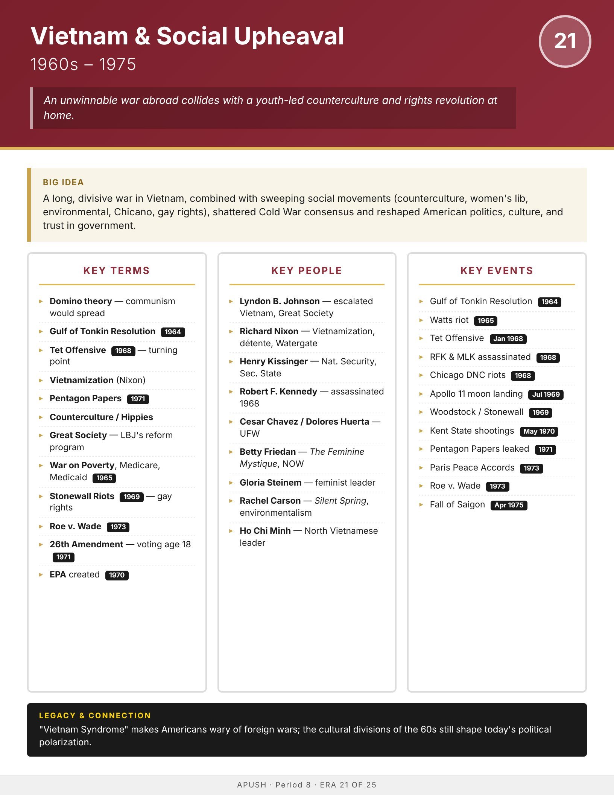

Era
Wise
AP History
AP United States History
Home
Course Sequence
Eras
Exam Prep
← Course Sequence
Era 21 of 25 · AP Period 8 · Lessons 51–53
Vietnam & Social Upheaval
1960s–1975
Open infographic full size
Print

← ERA 20
Civil Rights Movement
ALL ERAS
Eras index
ERA 22 →
Late Cold War / Conservative Resurgence